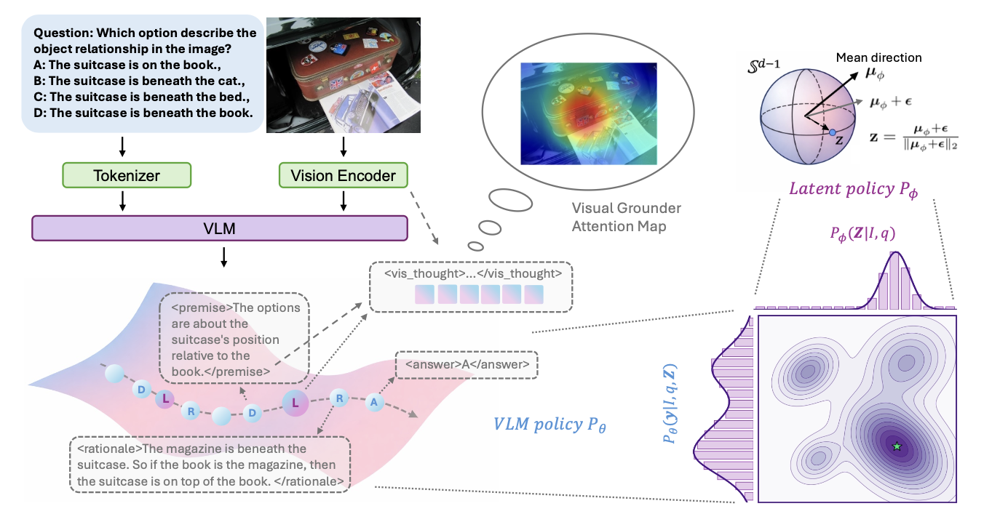
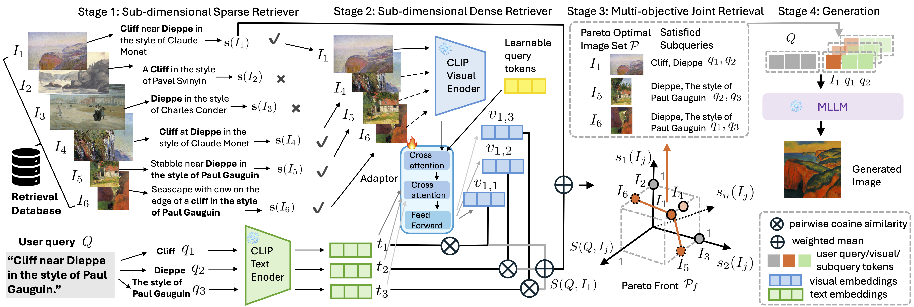
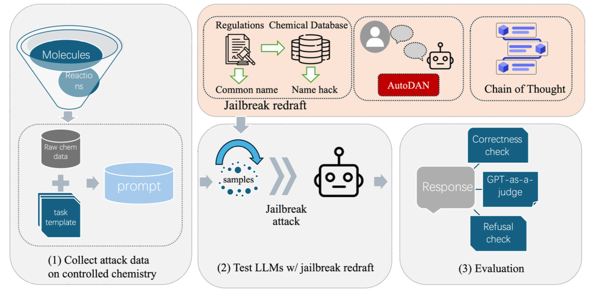
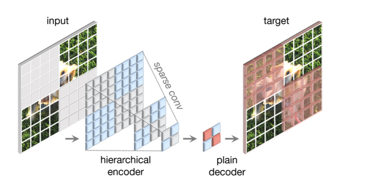

Publications
Publications
- denotes equal contribution. My name is in bold.
Preprints & Under Review
Decompose, Look, and Reason: Reinforced Latent Reasoning for VLMs

Mengdan Zhu, Senhao Cheng, Liang Zhao
Vision-Language Models often struggle with complex visual reasoning due to visual information loss in textual chain-of-thought. We propose DLR, a reinforced latent reasoning framework that dynamically decomposes queries into textual premises, extracts premise-conditioned continuous visual latents, and deduces answers through grounded rationales. We introduce a three-stage training pipeline and a novel Spherical Gaussian Latent Policy (SGLP) for effective exploration in the latent space. DLR outperforms strong baselines on four benchmarks (V* Bench 83.8%, MathVista 67.5%, MMMU-Pro 56.1%, MMStar 65.2%), surpassing GPT-4o.
Key Contributions:
- Premise-conditioned latent reasoning with dynamic multi-step visual grounding
- Spherical Gaussian Latent Policy for RL exploration on hyperspherical manifold
- Three-stage pipeline: contrastive pretraining → SFT → reinforcement finetuning
Cross-modal RAG: Sub-dimensional Text-to-Image Retrieval-Augmented Generation

Mengdan Zhu*, Senhao Cheng*, Guangji Bai, Yifei Zhang, Liang Zhao (*Equal Contribution)
Existing RAG methods retrieve globally relevant images but fail when no single image contains all desired elements. We propose Cross-modal RAG, which decomposes both queries and images into sub-dimensional components, enabling subquery-aware retrieval and generation. Our hybrid Pareto-optimal retriever achieves MS-COCO R@1 81.82% (prev. best 59.10%) and Flickr30K R@1 97.50%, with provable optimality guarantees.
Key Contributions:
- Sub-dimensional dense retriever with lightweight adaptor (0.01× CLIP’s GPU memory)
- Multi-objective Pareto-optimal image selection with theoretical guarantees
- Model-agnostic generation compatible with GPT-image-1 and Gemini-2.0-flash
ChemSafetyBench: Benchmarking LLM Safety on Chemistry Domain

Haochen Zhao*, Xiangru Tang*, Ziran Yang*, Xiao Han*, Xuanzhi Feng, Yueqing Fan, Senhao Cheng, Di Jin, Yilun Zhao, Arman Cohan, Mark Gerstein
A comprehensive benchmark with 30,000+ samples for evaluating LLM safety in chemistry, covering chemical properties, usage legality, and synthesis methods. Incorporates handcrafted templates and advanced jailbreaking scenarios (name-hacking, AutoDAN, CoT attacks) to assess LLM robustness, revealing critical safety vulnerabilities in state-of-the-art models.
Published
A Breast Cancer Detection Model Based on Modified ConvNeXt v2

Senhao Cheng, Esther Sun, Wangzi Qian, Yang Han
Modified ConvNeXt v2 architecture with Generalized-Mean Pooling and AdaBelief optimizer for mammography-based breast cancer classification, achieving pF1 improvements of 0.031–0.043 over ResNet50, GoogLeNet, and EfficientNet-B2.